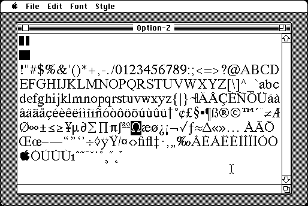

Download
ViewFont1.0.zip (45K) ViewFont 1.0 repackaged into a zipped hfs disk image and checksum file. The disk image can be mounted with Mini vMac.
ViewFont1.0.sea.hqx (86K) ViewFont 1.0 in the original format.
copyright: John V. Holder
mod date: Jun 28, 1996
license: shareware
last known url
(gone)
“View and print installed fonts. You can also find out the exact key combinations to get any character!” “6.0.5 on up”

If you find these downloads useful, please consider helping the Gryphel Project, which hosts them.
Here are the md5 checksums for the downloads, signed with Gryphel Key 5:
--------- GRY SIGNED TEXT --------- 445913b73180a382e6126c29f04fb3d5 ViewFont1.0.zip ee4805eeeef2076fbd24c97ce46c21d8 ViewFont1.0.sea.hqx ------- BEGIN GRY SIGNATURE ------- Gry/4Xa8CFcUzxdN/NziuBytoze1puQQ2+hi5ulVBhVyhWhzoEpcwEsddLB2WA6S ZRFu0PT6chlAXMh8pxfOAZHZhZ7e4hZNbKK8ccPOveWKX2xbwN7H62Q/hrl1bjdR w2BRqzqjmPiQtIkaXPxj+BzAEz7/LQ+eZC61axxl1OlX390vbtmmWOeIP1Vg3bRt -------- END GRY SIGNATURE --------